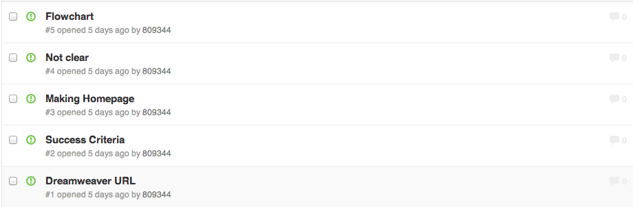

Evaluation:
Evaluation is all about me critiquing my project, what I think went well, did I meet the Success Critera (located on the side bars), and what I could have done to improve it for the future.
1) What I think for our project:
a) Success Criteria:
2) Feedbacks:
Feedback on story board from Steven:
- The background- a little bit distracting
- Straight to the point- extremely simple :)
- Change the font= not appealing to the eye
Changes I have made to my storyboad after feedback:
Before:

Description:
- The background was a way to distracting
- Maybe the bar selection (the bar located at the top of the page) was a little bit "cheap" looking
- Fix it with something more sleek
-
After:

Changes:
3) Problems:
These are all the technical, and working problems I had during this project. This part of the evaluation shows you what I have done to tackled the problems and what the problems were.

4) What I learnt so far:
- I learnt how to put numbers instead of bullet points through the web by searching it online:
5) Unrelated-to-the-project evaluation
This part of the evaluation shows you my previous ideas that I chose that didn't work very well due to some technical difficulties. These are all the objectives my group and I thought of and written down.
Choosing our Idea
Our first idea did not go well
- Which was a website for most common types of school's textbooks
Why?
- I chose this idea mainly because I feel that a lot of studnets (lincluding myself) are always looking for their school texbooks in different websites, and I feel that is incredibly difficult to find the type of textbook in just one website. Sometimes the website has different types of school textbooks but they either do not have the answers to the questions or they are missing different pages.
Client: Math teachers
- How are we going to approach it: We are going to make a pdf-viewer type of textbooks for all the answers and the working out
Objectives
- Get the PDFs from the math teachers
- What are we trying to solve? We are trying to solve the trouble for students when they do not know an answer while doing their math answer. Also, it is more easier for the teachers since the website does not require them to answer the students emails, asking for help.
- Website will have easy navigation- there will be a search bar on the side and a list of the textbooks on the side bar as well
- Viewable PDFs at the top will have a search bar for pages and differet chapters
- Different tabs will open when clicked to different textbooks to make it easier and convient for the audience
- Website will be simple to make it easier to navigate and easier access-
- FOR students that are struggling with chapter 14 in Algebra 3, they can use this website TO help them study the chapter by quizzes and tips.
- FOR Mr. Kang TO not have to make a mdoodle page just for chapter 14 for the sake of students that are struggling with chapter 14.
- FOR people outside in the real world TO study for trignometry, can access this website and practice before their test.